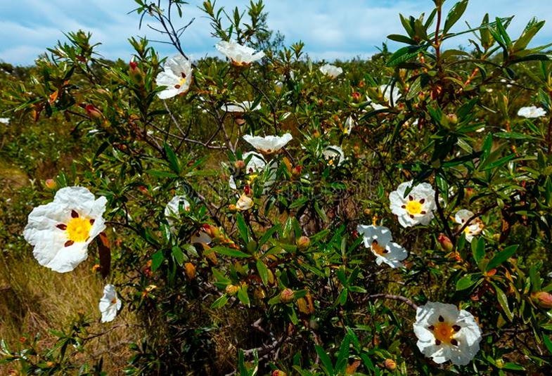

The Jara is a plant typical of Mediterranean regions, especially in dry and sunny areas such as the coast of Granada. It is a shrub resistant to high temperatures and drought, adapting well to the poor, rocky soils that characterize this region.
Characteristics of the Jara
- Size and Shape:
- The Jara is a shrub that can reach a height of between 0.5 and 2 meters, depending on the species and environmental conditions. Its structure is branched, with woody stems growing upwards and a dense, compact appearance.
- Leaves:
- The leaves of the Jara are small, lanceolate, and greyish-green in color. They are evergreen and covered with a fine layer of hairs that help reduce water loss. These leaves have a rough texture and are arranged alternately along the stems.
- Flowers:
- The flowers of the Jara are one of its most distinctive features. They are medium-sized and come in vibrant colors, ranging from white, pink, and purple. The flowers typically have a "five-petal" shape and are grouped in clusters. They are very attractive to bees and other pollinating insects.
- Fruit:
- The fruit of the Jara is a woody capsule that contains several seeds. As it matures, the capsule opens explosively, releasing the seeds into the environment. This mechanism is an adaptation for dispersing seeds over large areas.

Distribution of the Jara
| Zone | Location | Comments |
|---|---|---|
| Mediterranean Coast | Coastal areas from the Valencian Community to Almería | The Jara is common in dry, rocky coastal areas where the climate is warm and dry. |
| Sierra de Cazorla, Segura, and Las Villas | Inland Jaén, in mountainous areas. | This mountain range is where the Jara can be found in dry and arid scrubland areas. |
| Sierra de Gredos | Ávila and Cáceres, in mountain areas. | The Jara is part of the dry scrublands in the mountains, withstanding extreme temperatures. |
Uses and Benefits
- Ecological: The Jara plays an important role in soil conservation, as it helps prevent erosion in mountainous areas. Its deep root system and dense growth provide stability to the soil and contribute to maintaining biodiversity in its environment.
- Medicinal: Traditionally, the Jara has been used in folk medicine due to its anti-inflammatory and antioxidant properties. The leaves of the Jara are used in infusions to treat respiratory and digestive issues.
- Cultural: The Jara also holds symbolic value in many Mediterranean cultures, as it is seen as a symbol of resistance to the adversities of the climate, alongside other plants.